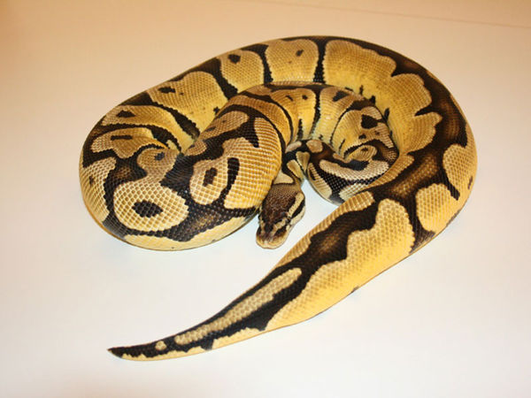
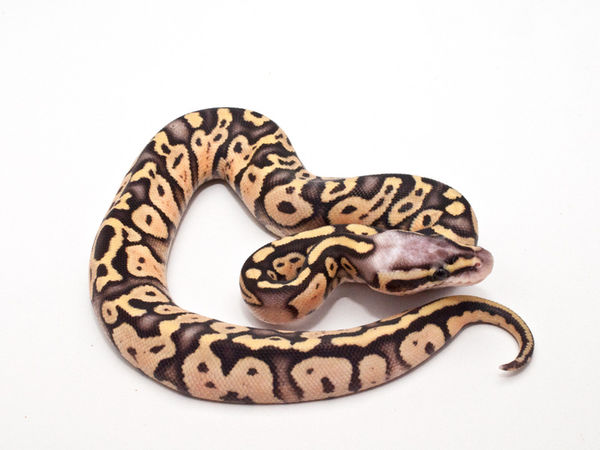
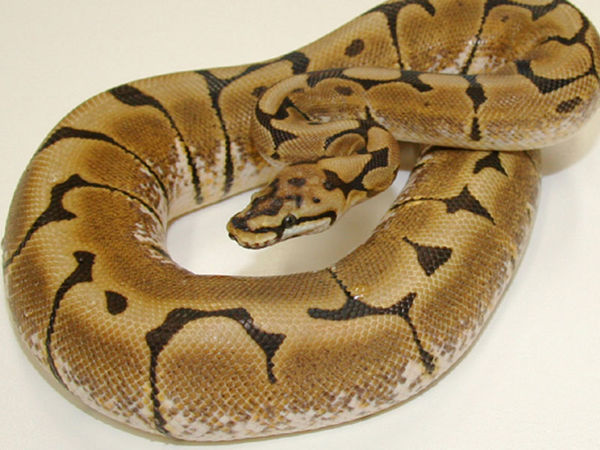
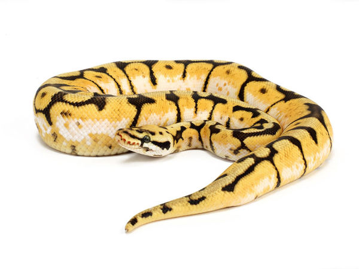
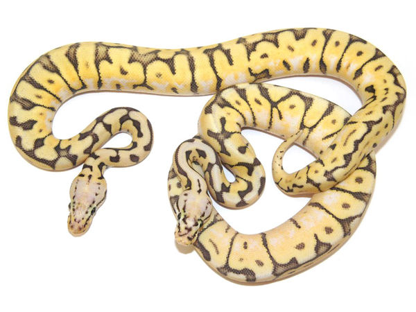
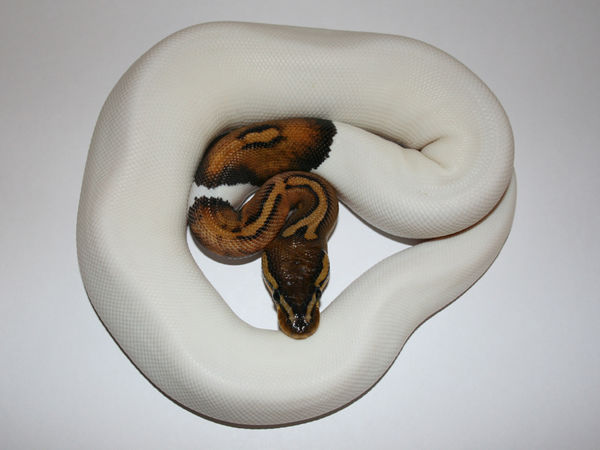
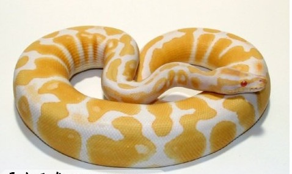

淺談球蟒一些基本品系
淡彩(Pastel)
這是一支複雜的血系，早期淡彩常參雜於進口小球之間，他們多半顏色樸素，唯一和其他球蟒不同只有略淡的體色。直到數年前國外繁殖場發現此血系的潛力便進行大規模的選系育種(Selective Breeding)。至今已有多種具特色的淡彩出現。
超級淡彩(Super Pastel Jungle)
淡彩球的同型合子，特色是比淡彩更看似粉嫩的體色和紋路。由頂級檸檬淡彩所繁殖的超級淡彩是只可會意而無法言傳的美球。
蜘蛛(Spider)
這也是製造大黃蜂及殺人蜂不可或缺的元素，由NERD證明為顯性基因，此球最大特色為極端減少的紋路。次要判別方法為較一般球蟒淡色的眼睛及淺棕色的頭部。早期的蜘蛛球常被人詬病有神經質、不易上手的缺點但此現象已被長年選系育種而消弭殆盡。其衍生型算是台灣常見designer morphs中很常出現的角色。
大黃蜂(Bumble Bee)
淡彩和蜘蛛球結合的個體。
殺人蜂(Killer Bee)
killer bee是super pastel spider。但直接把超級淡彩和蜘蛛球交配並不會得到此個體。須將大黃蜂和帶有淡彩基因的球蟒互配才有機會產生。
派球(piebald)
這是隱性基因的代表，這在一堆變異球中是最引人注目的品系了，大面積且毫無汙點的白色區塊配上橘色的不規則斑塊使得piebald成為變異球界歷久不衰的長青樹。其實派球的英文piebald原意是馬匹交易時形容身上有白色斑塊馬的稱呼。如今派球在顯性及等顯性基因大量繁殖價錢貶低的今天是潛力無窮的品系。派球的價錢由身上白色的比率區分，白色面積越大價錢越高。
白化球(albino)
早在1970年代就有少量引入美國，直到1992年才由Bob Clark證實為隱性基因並量產。細分一胎白球的成體可能會發現有色塊較黃的個體，這就是高對比白球(high contrast albino)，這是隨機出現的，但高對比親代有較高機會生出高對比小蛇。此外，不少人說紅尾蟒等蛇因白化基因太過接近，互相交配會產生瑕疵子代，非得由het.(帶基因個體)繁殖才會有健康幼蛇，但球蟒不需考慮這點，因為每年都有新的白球由產地迦納或東哥引進，沒有近親交配問題。由於是隱性基因且球蟒生蛋數目少，所以跟派球一樣價錢穩定。
薰衣草白化(lavender albino)
和一般白化最大的不同在一般白化的白色區塊被與日俱增的濃郁紫色取代。價格可高達40000美元，薰衣草背景上有黃色斑點，這是由於它的隱性基因突變造成的，它曾經是世界上最昂貴的寵物。